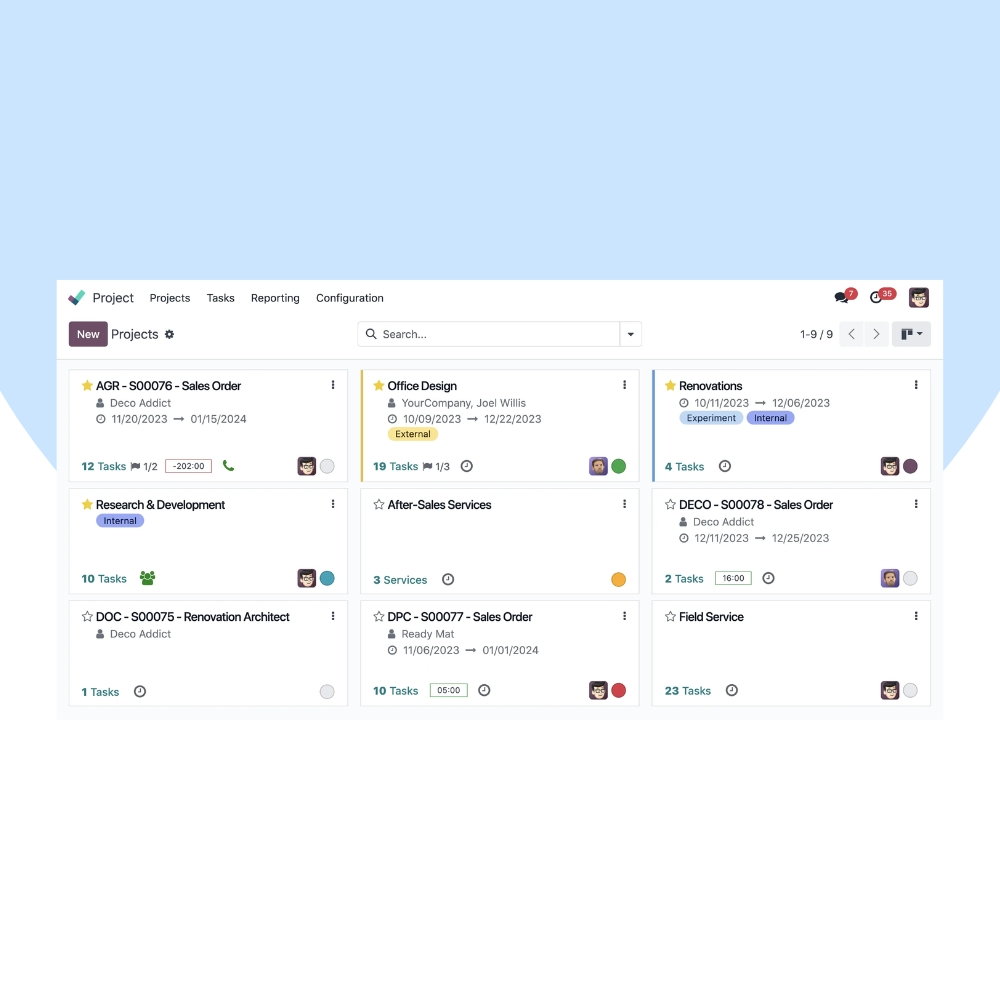
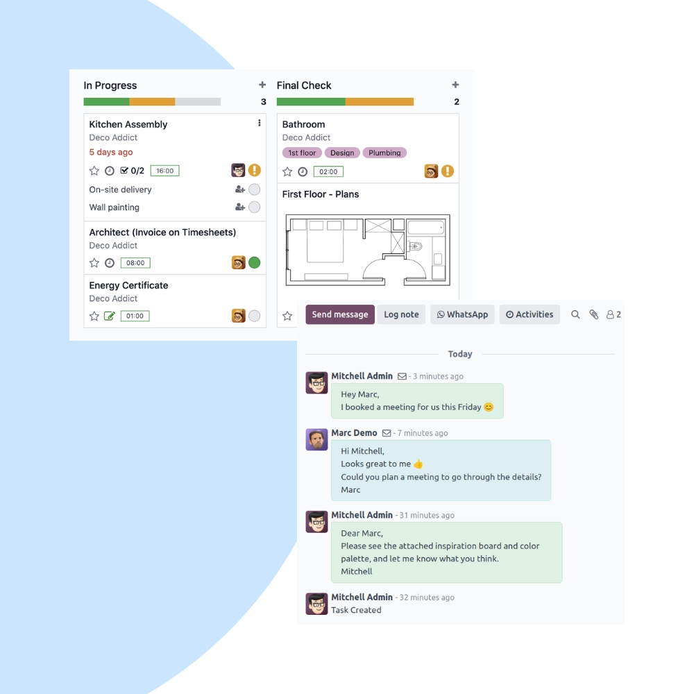
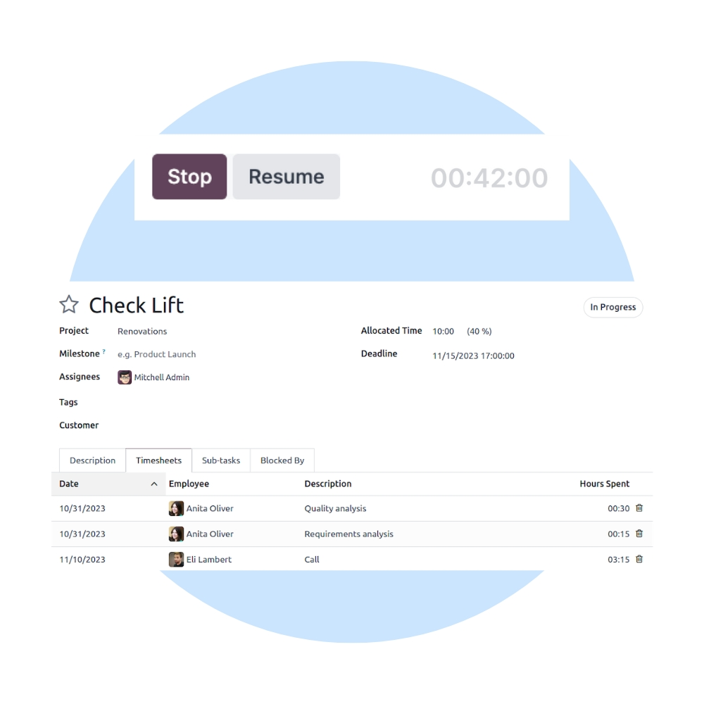

Deliver projects on time with Odoo Project. We help teams manage tasks, timelines, milestones, and collaboration in one centralized, easy-to-use project workspace.
We configure Odoo Project to match your project methodology, workflows, and reporting needs. Integrate projects seamlessly with Timesheets, Sales, Accounting, Helpdesk, and HR modules.


Our implementation ensures full project visibility, better collaboration, and accurate tracking of progress, effort, and costs.
Organize tasks with Kanban and list views.
Track key deliverables and deadlines.
Communicate and share files within tasks.
Monitor timelines, workload, and completion.
Track effort and billable hours accurately.
Connected with Sales, HR & Accounting.
We help you continuously optimize project delivery, improve productivity, and scale project operations with reporting and best practices.
